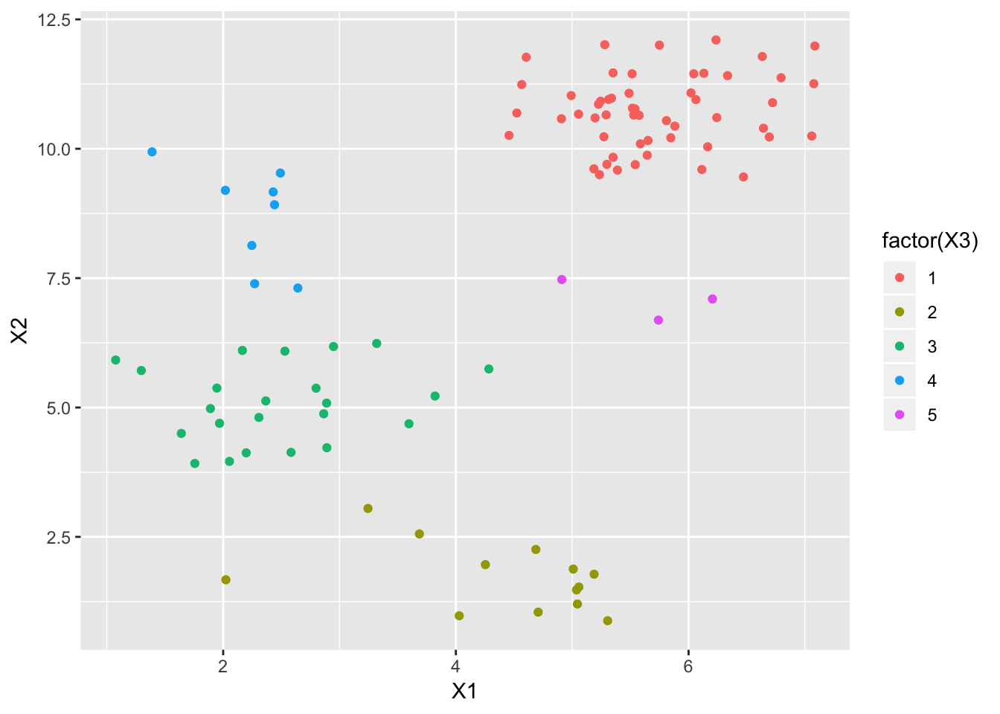
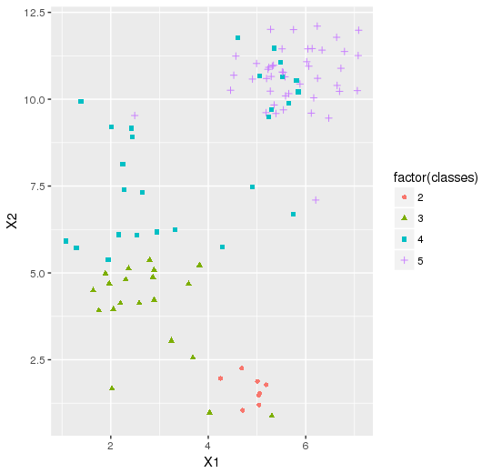
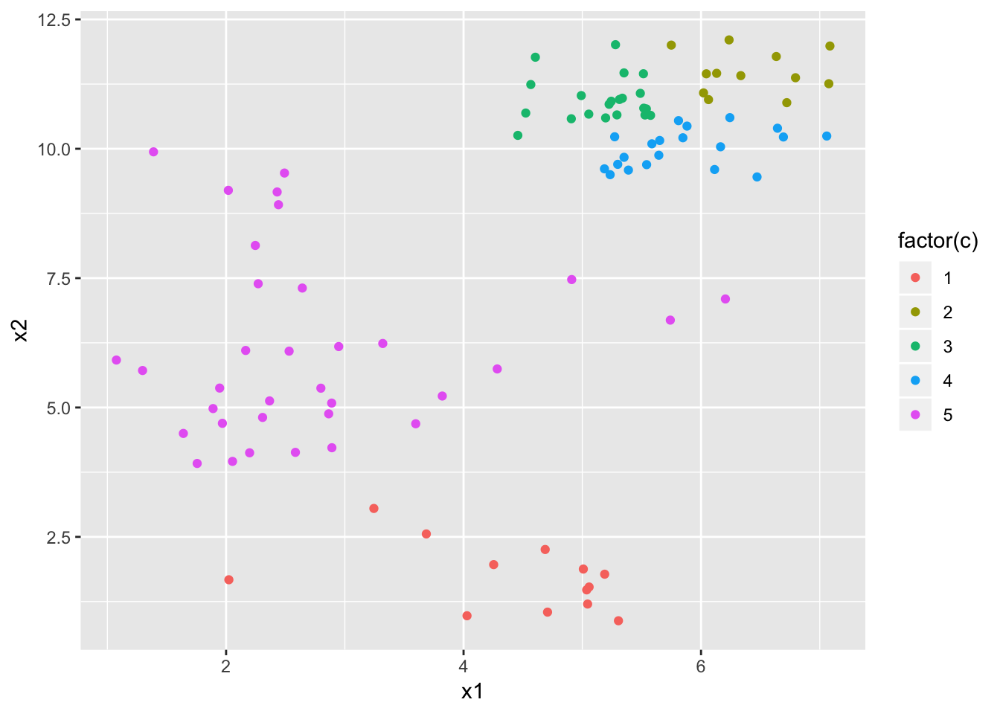

Nonparametric Bayesian model
There are many cases, which require a presuming parametric specifications of the probability distributions, such as observations from Normal distribution or Quening model with Poisson distribution, and so on. But this subjective assumption may cause misspecification of model, which will result in bad prediction of severe lack of accuracy. To avoid such cases, nonparametric methods are better, which can allow more flexible and robust specification. “Learning from data” can help reduce many risk.
Indeed, nonparametric bayesian model should also have a bayesian-version style, which should contain prior, posterior, complex likelihood with kernel due to its complex expression and clever sampling methods needing expensive computation.
In machine learning, clustering is one big topic. There are many clustering methods. Clustering problem has an unsupervised problem setting, which means there is no available labels for the data, people have to use the intrisic structure of data to assign data points into different clusters.
To figure out this kind of problem, one way is to use a standard clustering algorithm like K-means or Gaussian mixture modeling. Both methods are similar, because they regard distances between data points as an important criterion for clustering, they cluster all points in a certain area together. But there is a problem that both methods need a fixed number of clusters, which should be setted by people subjectively. Although this problem can be solved by cross-validation in some extent, we now try a method, which doesn’t need the prefixed total number of clusters. By resorting to nonparametric bayes, we allow the number of clusters grow as more data comes in instead of fixing the number of cluster to be discoverd.
CRP process
CRP process is a proper generative model without fixed number of clusters. Consider a problem that we need one way to assign friend to different tables. We describe this process in a rigorous way:
- A chinese restaurant has an infinite number of tables:
- first customer sits at the first table
- m-th subsequent customer sits at a table drawn from the following distribution:
$$P(previously\ occupied\ table\ i|\mathcal{F}_{m-1}) \propto n_i$$
$$P(the\ next\ unoccupied\ table|\mathcal{F}_{m-1}) \propto \alpha$$
where $n_i$ is the number of customer currently at table i and where $\mathcal{F}_{m-1}$ denotes the state of the restaurant after m-1 customers have been seated.
This means, the (n+1)st person sits down at a new table with probability $\frac{\alpha}{n+\alpha}$, and at table k with probability $\frac{n_k}{n+\alpha}$, where $n_k$ is the number of people currently sitting at table k, and $\alpha$ is a dispersion hyper-parameter.
And with the clustering assignments, we can further assume that for kth cluster there is parameter $\phi_k$, we assume that $\phi_k\sim G_0$. Thus the generative model for data $X$ is $X|\phi_k \sim F_k, \phi_k\sim G_0$. This model can generate data with overlapping clusters. In this case, K-means and Gaussian mixture are not good enough, because from scatter plot people cannot define a correct number of clusters, because points are not seperatable in the plot.
The R-code for CRP process is following:
1 | ####Chinese Restaurant Process#### |
This function will generate n samples from CRP process. It will return total number of clusters K and individual class vector “class”.1
crprnd(alpha = 1.0, n = 20)
Generate Data & Prior Assumption & Create Sampler
In this section, we will try the nonparametric bayesian clustering in a simple case, where data are generated from a Normal distribution with share constant variance. And $X_i$ is a p-dimension vector. The generative procedure is:
$$\phi_k \sim \mathcal{N}_p(\mu_0,\Sigma_0)\\ z_i\sim CRP(\alpha)\\ X_i|\phi_k,z_i = k,\Sigma \sim \mathcal{N}_p(\phi_k, \Sigma)$$Generate Data
Here is the code for generating experimental dataset, we will generate 100 data points with 5 latent clusters. And we set $$\mu_0= (4,7), \Sigma_0 = \begin{bmatrix} 4 & 1 \\ 1 & 8 \end{bmatrix},\ \alpha = 1.0,\ N=100, \Sigma = I_2\times 0.5$$ the generation procedure and simple visual is following:
1 | library(mvtnorm) |

From this graph we can see that, such dataset has obvious overlapping clusters, and these clusters can be detected easily.
Derivation of Sampler
With this generative model, we can derive the posterior distribution of parameters with interest in. In clustering task, we want the distribution $z_i|X_i,\Sigma,\mu_0,\Sigma_0, \ \ i = 1,…,N,\ z_i \in \mathbb{N^+}$, and to get this posterior, which doesn’t has a explicit expression. So we need to resort to Gibbs sampling method, which also need us to derive the full conditional distribution or respective kernel part. Because for parameters z we can only derive its kernel part, so we can only use Hybrid Gibbs Sampling.
Algorithm of Hybrid Gibbs:
Initialization. We set $$\mu_0 = \bar{X},\Sigma_0=\frac{1}{n}XX^{T}$$ and initialize $z_{i},\phi_{k},i\in{1,..,N},k\in{1,..,K}$ with CRP and multivarite normal.
For the s-th echo:
For i from 1 to N:
We use a proposal distribution $z^*\sim \mathcal{N}{I(j\in[0.5,100])}(z^{(s)}{i}, 3)$, which is due to we want cluster index is positive integer and 100 points at most have 100 clusters;
Sample $z_i$ by Metroplis-Hasting. Calculate the ratio $\frac{f(z^*|\cdot)}{f(z^s|\cdot)}$, where $$z_i|\phi_{\{k\}},X_,z_{-i},\Sigma_0,\mu_0\propto \sum_{k=1}^{K}n_kp(x_i|\phi_k)\mathbb{1}_{\{z_i = k\}}+ \alpha f(x_i|\mu_0,\Sigma_0)1_{\{z_i=K+1\}}$$ where $n_k$ is the number of points in cluster k.
For k from 1 to K:
- Sample $\phi_k$ from the full conditional distribution. According to the posterior update, we have:
$$\phi_k|X_{i},Z_{i},\mu_0,\Sigma_0 \sim \mathcal{N}_p\big((\Sigma_0^{-1}+\Sigma^{-1})^{-1}(\Sigma^{-1}\bar{X}_k+\Sigma_0\mu_0),(\Sigma_0^{-1}+\Sigma^{-1})^{-1}\big)$$
If $s>C$, C is the echo when this sampler is stationary, we will collect samples of $(z_1,…,z_N)$.
Stop sampling until s reach S.
This model is also named Dirichlet Process Gaussian Mixture Model(DPGMM) or Infinite Gaussian Mixture Model.
Code for calculating the loglikelihood ratio and Hybird Gibbs are following:1
2
3
4
5
6
7
8
9
10
11
12
13
14
15
16
17
18
19
20
21
22
23
24
25
26
27
28
29
30
31
32
33
34
35
36
37
38
39
40
41
42
43
44
45
46
47
48
49
50
51
52
53
54
55
56
57
58
59
60
61
62
63
64
65
66
67
68
69
70
71
72
73
74
75
76
77
78
79
80
81
82
83
84#####likelihood function for Gibbs#####
likeli = function(zi,x_i,n_vec,alpha,Kplus,mu, mu0, sigma0, sig){
p = length(x_i)
if(zi > Kplus){
return(alpha*dmvnorm(x_i, mean = mu0, sigma = sigma0+sig))
}
else return(n_vec[zi]*dmvnorm(x_i,mean = mu[zi,], sigma = sig))
}
mu0 = colMeans(testdata[,1:2])
sigma0 = cov(testdata[,1:2])
plot(testdata[,1],testdata[,2], pch = 20)
####### Start the Simulation!!!!######
alpha = 1;
R = 10000; N = 100; p = 2
sig = diag(rep(1,p))*0.5
mean_vec = matrix(0)
cluster = rep(0, N)
####Initialization: clusters, means#####
cluster = crprnd(alpha, N)
K = cluster$K
mu = mvrnorm(100, mu0, sigma0)
Z = cluster$class
mean_vec1 = tapply(testdata[,1],Z, mean)
mean_vec2 = tapply(testdata[,2],Z, mean)
mean_vec = cbind(mean_vec1, mean_vec2)
n_vec = table(Z); K = length(n_vec)
X = testdata[,1:2]
######updating by Hybrid Gibbs#######
sigma_update = solve(solve(sig) + solve(sigma0))
invsigma0 = solve(sigma0)
Z_post = NULL
for(r in 1:R){
if(r %% 50 == 0)
print(paste0("this process is still alive!! Be patient! Echo = ",r))
for( i in 1:N){
s = 1; S = 5
z = NULL
z.s = Z[i]
for(s in 1:S){
####choose proper proposal distribution####
z.star = rtrun(2, 3, 0.5, 100)
z.star = round(z.star)
###Computer the rejection probability
log.r = log(likeli(z.star,X[i,],n_vec,alpha,K,mu, mu0, sigma0, sig)) -
log(likeli(z.s,X[i,],n_vec,alpha,K,mu, mu0, sigma0, sig))
if (log(runif(1))< log.r) {z.s = z.star}
z = c(z,z.s)
}
Z[i] = z[S]
}
####update vec mu and vec n#######
for(k in 1:K){
mu_update = sigma_update%*%(solve(sig)%*%mean_vec[k,] + invsigma0 %*% mu0)
mu[k,] = mvrnorm(1 ,mu = mu_update, Sigma = sigma_update)
}
n_vec = table(Z) ; K = length(n_vec)
mean_vec1 = tapply(testdata[,2],Z, mean)
mean_vec2 = tapply(testdata[,3],Z, mean)
mean_vec = cbind(mean_vec1,mean_vec2)
if(r%%100 == 0)
paste0('the process is still alive, r=',r)
if(r > 7000){
Z_post = rbind(Z_post,Z)
}
}
####get the posterior mode####
getcluster = function(x){
return(which.max(table(x)))
}
####mean####
classes = round(apply(Z_post,2,mean))
finaldata = cbind(X,classes)
####Visualization####
ggplot(finaldata, aes(x=X1, y=X2, shape = factor(classes),color=factor(classes))) + geom_point()
(After about 15mins..) The final visualization is:

From this graph we can see that this method can catch some overlapping clusters and allow more flexibility. Although we have only 4 clusters here, but each cluster seem reasonable. A better performance may be got by other additional tools, such as sample $z_i$ with a certain gap and keep sampler working for a longer time.
##Kmeans method from Frequentists##
Kmeans method is a clustering method based on distances between data points, and the procedure is resorting to EM algorithm. In this procedure, people regard labels as missing data, and use EM algorithm to assign data points in the cluster which makes data has largest likelihood, and then update the new cluster parameters by sample means. Code is following:1
2
3
4
5kmclass = kmeans(testdata, 5)
final = cbind(testdata[,1:2], kmclass$cluster)
names(final) = c('x1','x2','c')
g = ggplot(final, aes(x= x1, y= x2, color= factor(c)))
g+ geom_point()

Conclusion
From the results of both methods, we found that nonparametric bayes can handle more flexible dataset, which has complex intrinsic structure or correlation. But Kmeans-like frequentists’ methods mostly consider that under fixed groups how can people assign these data points properly. And clustering by nonparametric bayes don’t need to choose the number of clusters, which will give a smart guess when people don’t know anything about datasets in hand. And the model can be improved with cluster-specified covariance matrix. Even more complex case is that we are interested in all parameters, we can create a bigger Gibbs sampler which includes every full conditional distributions, but the computation will be very expensive. Because i-th label’s likelihood is based on current labels of other data, there is not a trivial parallel computation strategy for this problem.